2010年全团赛第一轮自战解说
#1 2010年全团赛第一轮自战解说 作者：足球赛 发表时间：2010-8-18 12:49:05
我第一局对贺启发，我执黑开疏星，他没有交换，两打是G9和J9
本文来源于中国五子棋网，原文地址是：http://wuzi8.com/pinqi/HTML/2473.html
我第一局对贺启发，我执黑开疏星，他没有交换，两打是G9和J9
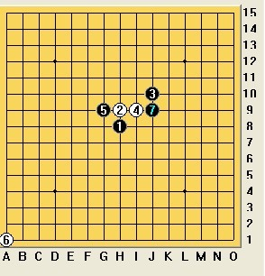
他长考后拔去一打，正常应对到第七手
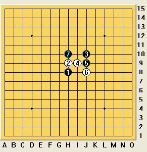
他第八手变着，可能是怕中研究吧
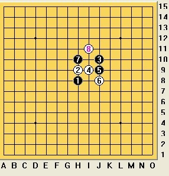
第九手应该有四种比较常见的下法吧
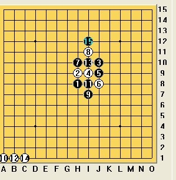
其中I7应该最佳吧，占据外势，可能控满盘吧
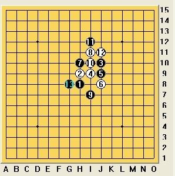
实战中我保守地选择了I8，正常应对到第十二手
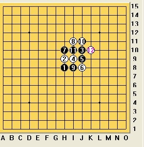
黑棋后面的正确走法应该是这样
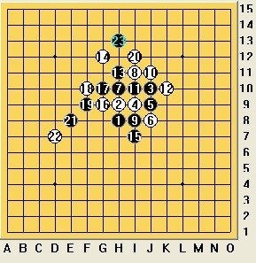
局势基本平衡
实战中十三手我选择了I12做VCT，这个点相对弱一些，他长考后十四手K8防活二的同时做活二
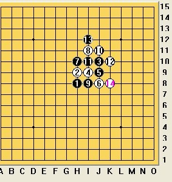
由于十三手弱棋，现在先手落于白棋，我长考后发现黑棋上方没有VCT，第十五手只能防守，他十六手防我的眠三
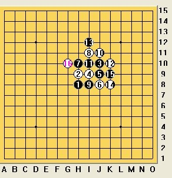
我第十七手落在H11，这是有争议的一手，后来回宾馆和我的队友们拆这局棋时，他们都认为我的十七手太弱而导致后来的输棋，他们建议十七手下在G11、L9或F9，比赛回来后我用软件拆了一下，发现我的十七手还是可以下的，另外几个十七手都是白大优或白必胜
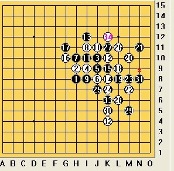
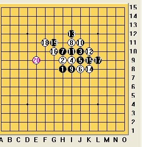

他长考后，第十八手落在K7做眠三，我第十九手压缩空间，二十手做活二向下发展，二十一手挡眠三，白棋现在没什么棋了，他又陷入长考之中
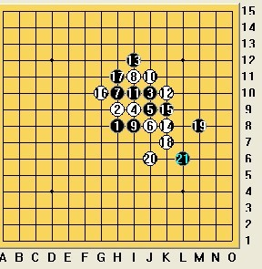
长考之后，他二十二手落在G7，这一手是一着妙棋连接全盘，空间感相当强，我开始了长考，第二十三手选择了L8、M7、I5三个点进行重点分析，感觉前两个点黑棋没有外势，
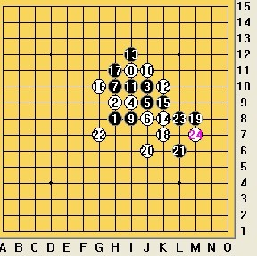
未完
#2 Re:2010年全团赛第一轮自战解说 作者：小红眼镜 发表时间：2010-8-18 15:10:37
 兄台，咱能不老发重复帖子不。。。。
兄台，咱能不老发重复帖子不。。。。
您发帖子以前先在论坛搜索一下有没有相同的帖子啊。。。。